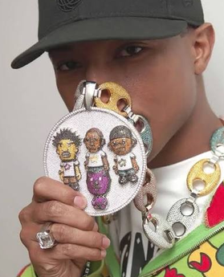
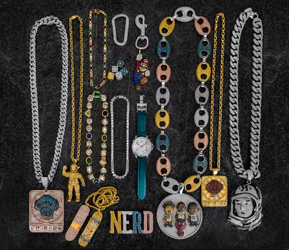

Conceived and designed by MENOCLONE founder OdotNYC, the Founder's Chain is a tribute to the fearless creativity of early-2000s hip-hop, streetwear and bespoke jewelry.
Its repeating MENOCLONE letterforms and signature UFO pendant bring the brand's identity into sculptural form. The front displays the MNC UFO emblem, while the reverse concept bears the name OdotNYC and the words “Originality Has Origins”—a statement of authorship and intent.
This piece is currently being created. Renderings represent the design vision, not a finished manufactured item.
02 / Digital atelier
Explore the piece.
Rotate and zoom the 3D design in your browser. Augmented-reality viewing is intentionally disabled.
3D MODEL PREVIEW Drag to rotate · Scroll or pinch to zoom
Interactive 3D model included. Browser-only viewing; AR mode is disabled.
In the early 2000s, Pharrell Williams and NIGO helped bridge Japanese streetwear, music and high jewelry. The world around A Bathing Ape and Billionaire Boys Club made playful, oversized, highly personal pieces part of a new visual vocabulary. Pharrell's distinctive custom jewelry—including work associated with Jacob & Co.—became a lasting reference point for self-expression. OdotNYC draws on that creative spirit while developing an original MENOCLONE design.

ARCHIVE INSPIRATION / Early-2000s custom jewelry aesthetic. Reference image supplied by MENOCLONE; rights remain with original owners.

ARCHIVE INSPIRATION / A visual vocabulary of chains, charms and experimental materials. Reference image supplied by MENOCLONE; rights remain with original owners.
This project is an independent tribute to a creative era. It is not affiliated with or endorsed by Pharrell Williams, NIGO, BAPE, or Jacob & Co.
ODOTNYC / MENOCLONE
NOT MADE TO FOLLOW. MADE TO MEAN SOMETHING.
From the first sketch to the final setting, the Founder's Chain represents a belief that personal history and independent design are worth preserving.